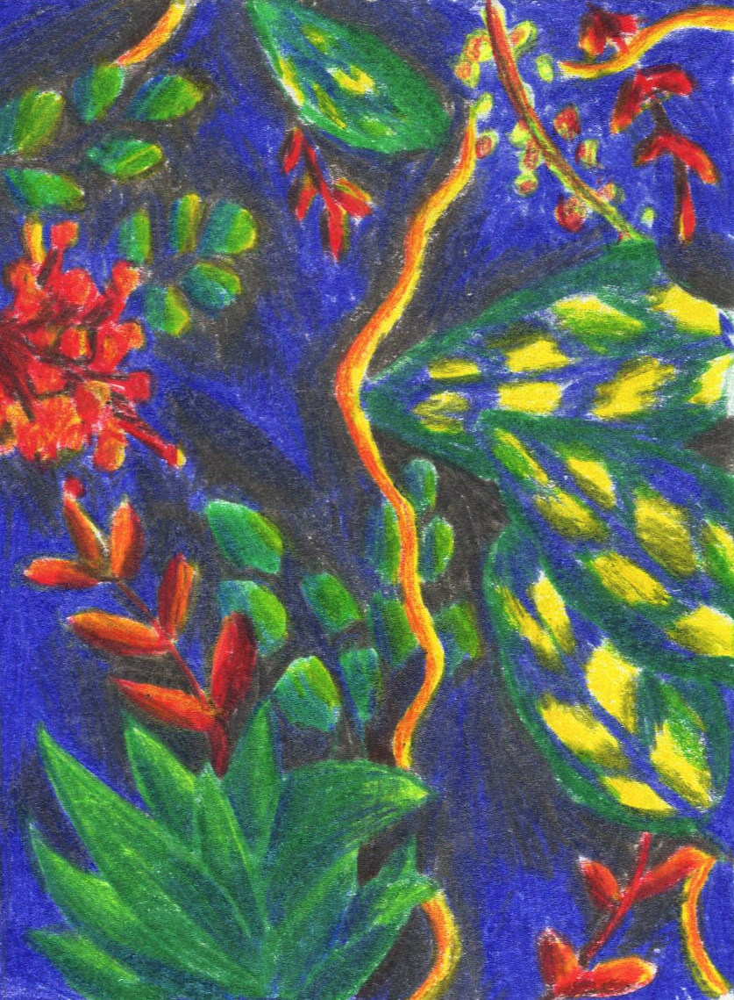
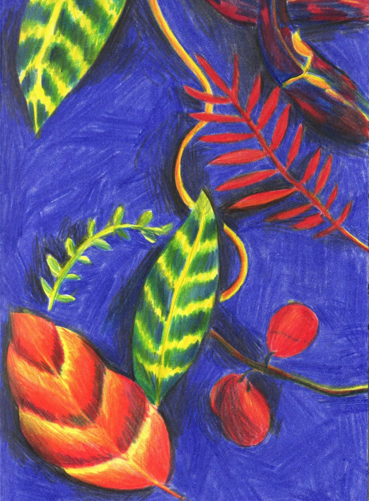
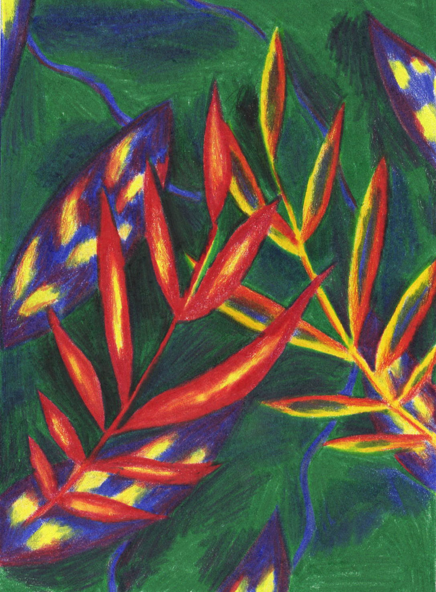
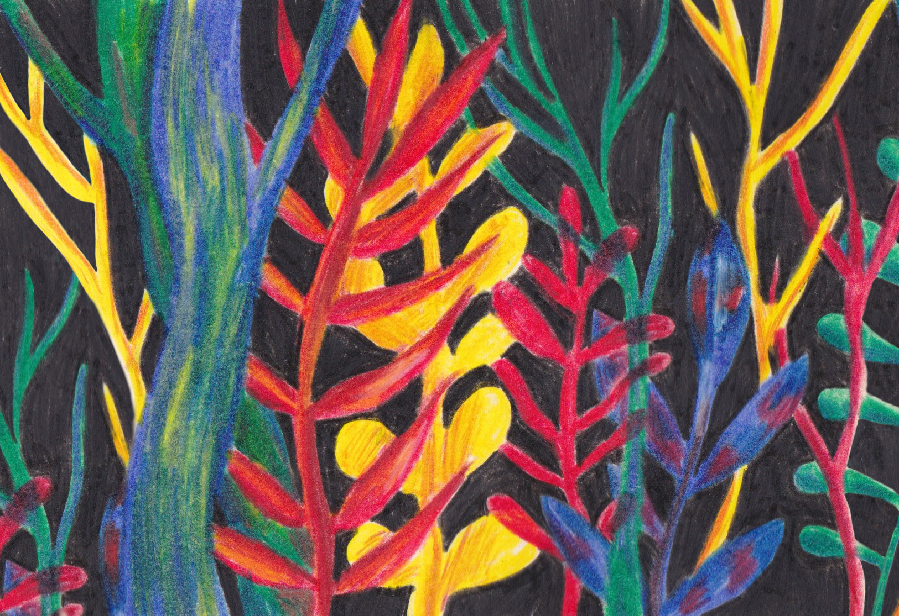

Illustrations
Explorations personnelles inspirées
des travaux de Anne Laval et du Douanier Rousseau.





Illustrations
Explorations personnelles inspirées des travaux de Anne Laval et du Douanier Rousseau.